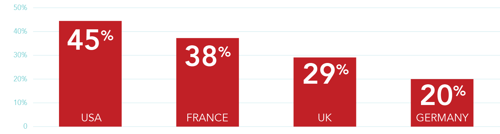

Exclusive Interview Discussing the Importance of KYC Orchestration Hubs and Dynamic Anti-Fraud.
Published on April 7th, 2021. View on Gambling Insider.
How has the COVID-19 pandemic affected gaming companies?
iGaming and gambling platforms have always been continually managing outside forces from technology demands, customer engagement preferences, regulatory evolutions, and economic changes. Our world can quickly change as we experienced from our global invader COVID-19. Since the pandemic, we have seen unprecedented changes in how people live, work and seek entertainment globally and how online platforms thrive on adapting. COVID-19 fueled the next wave of online innovation and, in parallel, how KYC and risk mitigation are managed.
The igaming and gambling industry is one of the global markets that experienced a tremendous surge in onboarding and transactional flow. As people accustom to multiple lockdowns, entertainment is sought online and spending habits adjusted. Leading to the highest engagement and per transaction amount increase ever experienced in the igaming and gambling industry over the last three years.
Increase rates over the previous year of around 30% have been stated across the industry. In the U.S. alone, gaming usage increased by 115% (1) compared to a typical day before the virus outbreak. Globally it is the number one data usage holding a 54% increase over others, including web traffic at 20% increase and streaming at a 12% increase. (2) In June 2020, 888casinos upgraded their profit expectations due to a daily revenue climb of 34% year-on-year. Spending on digital games during the global pandemic is 666% higher than any other gaming segment at a current $10 Billion U.S. spend. Whereas in the U.K., 20% of people search for online casinos than online poker as more and more people appear in poker rooms and online casinos.
Time spent in igaming per region during coronavirus pandemic:

eSports space saw a tremendous increase in attention due to the lack of traditional sporting events during COVID-19. New fans are unlikely to abandon eSports outright just because traditional sports have returned. Online gaming also continues to trade ahead, according to the GVC, with online revenue up by 22%.
How challenging is the area of KYC and risk mitigation for gaming companies right now?
With this increase of new global internet users and associated transactional volumes, another black box for risk and fraud presents. Fraudsters leverage the internet users driven online due to the pandemic that may be inexperienced to digital onboarding or cybersecurity awareness in protecting their online identity. Additionally, businesses that may not have had the agile KYC and risk mitigation processes pre-established to manage the volume surge instantly. Cybercriminals are especially drawn to igaming and gambling platforms to capitalise on the newer introduction of cryptocurrency deposit and payout methods, frictionless user onboarding experiences with only the bare minimal KYC required, and tier thresholds. All exponentially increasing the threat of money laundering, promo play fraud, bust-out fraud and account take-overs.
For many, the ability to manage, quickly adapt and add KYC processes, compliance and fraud prevention with agility is not in their core operational infrastructure. Rather KYC is configured through multiple 3rd party single-source data service providers - a slow, cumbersome and costly method that can raise additional friction. As a result, many igaming and gambling platforms implement what they require and therefore never utilise the benefits additional KYC data can bring to their gaming operations holistically. Furthermore, business operations have dramatically shifted with people working remotely, making it even more challenging to efficiently manage data security, risk screening, and transactional monitoring.
How important is this area - and how harmful can it be for a gaming company not to prioritise it?
Gaming operators and affiliates have always emphasised their brand awareness, obtaining frictionless onboarding, customer retention and penetration. In the current landscape, with most gaming companies predicting significant spikes in fraud and money laundering due to COVID, it is essential for them to rethink their strategy, sync with leading technology developments and adapt their business mantras for future-proofed sustainability.
Adherence to regulators and AML compliance rules, and fraud prevention has always been imperative. However, since the dramatic rise in volumes, the gambling commission is imposing tougher licence conditions on online operators. In the first four months of 2020 alone, the gambling regulator broke multiple penalty records, with fines totalling £27m with AML failures the primary reason for the penalties. To obtain a true understanding of the significance, it’s worth comparing this figure against penalty packages from the previous two years at just over £18m (2018) and £19m (2019).
Chief Executive of the Gambling Commission, Neil McArthur, says its “tough approach to compliance and enforcement will continue.” It is evident their position to suppress money laundering, protect customers and “encourage compliance by other operators fined enforcement” (4). Licensing and regulatory activity will not slow down post the pandemic. It is stated the financial cost of non-compliance with money laundering regulations will become even greater.
Besides anti-money laundering practices, gaming operators have increased regulatory adherence towards social responsibility and their VIP players. They must have configured adequate transactional monitoring and risk rules to identify problem gambling patterns, volumes, sessions, amounts, etc. and ensure they obtain adequate interaction with customers presenting with problem gambling.
The choice to not implement appropriate KYC and transactional monitoring in compliance with gambling commission regulation is just not an option - the cost of non-compliance by far exceeds the cost of complying. The internal cost of an investigation and the workload put forth on a business, along with the reputational cost of a fine both externally and to shareholders and investors, is devastating.
What options does 4Stop specifically offer to help firms with their KYC and risk management?
4Stop data marketplace is the first within the KYC and risk industry to truly revolutionise how businesses access, use and leverage KYC data. 4Stop’s data marketplace is home to hundreds of data service providers with a broad global spread of data partners – accessed through a single API integration in a timely, efficient and cost-savings manner. It is effortless to activate, deactivate or re-authenticate KYC in real-time for singular or multiple touchpoints, including deposit and payouts. Establishing direct solutions that are most effective within a specific region, in conjunction with smart logic based upon geography and perceived risk.
4Stop’s proprietary 3-tier risk scoring, cascading verification logic, dynamic decision-making frameworks, advanced anti-fraud workflows, case management and technology together transform their data and risk marketplace to perform accurate, frictionless, granular KYC and risk analysis 7x faster than any other solution in the industry. Data is optimised with the best results, performed in the most cost-efficient manner, and a 3-tier risk scored player profile brings confidence to accelerate acceptance rates.
4Stop’s risk marketplace has proven to increase alert distribution by 71% for identity-based fraud and reduce 75% verse baseline in bust-out fraud. Providing a centralised view of all verifications, transactions and associated risk. Risk managers utilise the powerful marketplace to advance performed KYC, track player behaviour easily, identify negative patterns, receive real-time transactional monitoring with dynamic system actions, advanced risk queues and more. As a result, reaction times to fraud is dramatically improved, and compliance adherence is easily obtained, reported and managed.
What is the future for KYC solutions, especially longer-term beyond the pandemic?
Our online engagement landscape and regulatory obligations change too quickly to support the tedious method of integrating required KYC and anti-fraud technology through single-source providers. It is just no longer a viable solution.
Over the last few years, we’ve seen an increase in data orchestration hubs that streamline businesses access to data paired with anti-fraud technology. Partnering with tier-1 orchestration hubs that provide on-going leading-edge KYC data and robust anti-fraud technology allows businesses to completely remove the complexity and cumbersome process associated with KYC and risk management. Regardless of online evolutions, businesses globally obtain the agility and future-proofed data and fraud prevention sustainability with zero-touch on their operations.
Additionally, businesses with endless access to various KYC data services can instantly boost their competitive position and enter new markets quickly, knowing risk and compliance are managed. Many data orchestration hubs offer data science to allow full market profiles to optimise risk mitigation before entering a specific market or region and, in turn, optimise KYC and configured risk protocols for current markets. Making quantifiable decisions based on data.
To learn more about 4Stop and its KYC, KYB data and risk marketplace book a demo today or contact an account representative.

 Follow us
Follow us